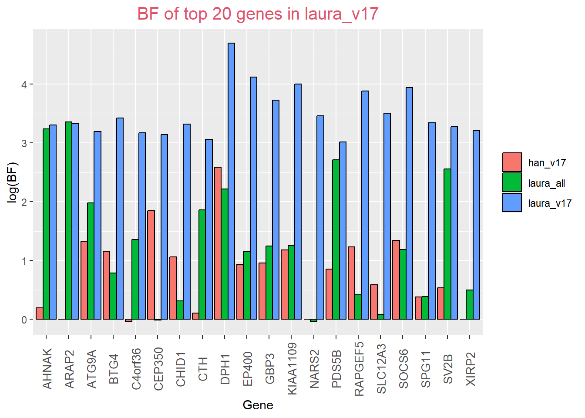
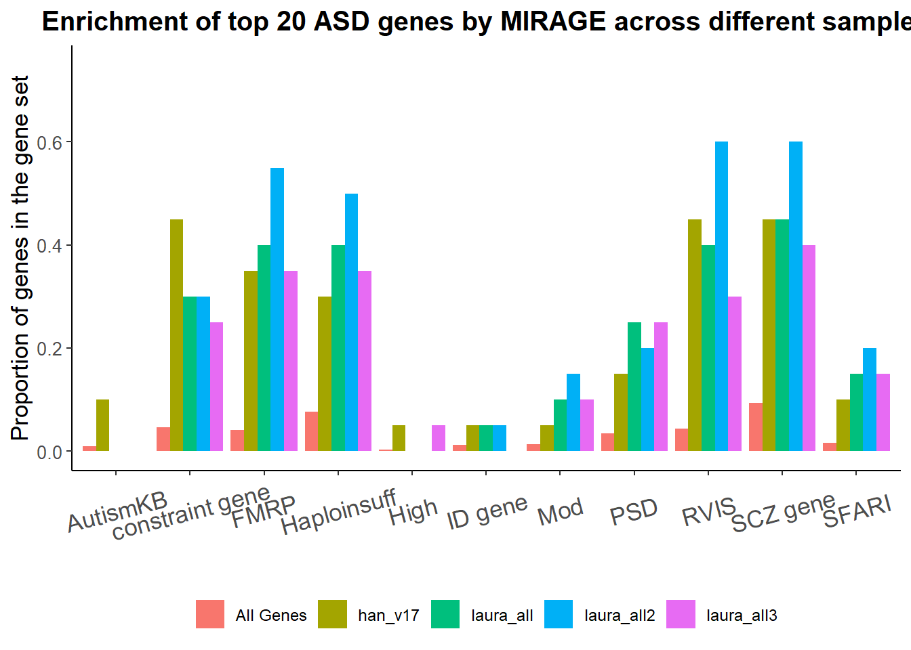

Laura analysis
2023-05-24

- for overlapping variants (89.1% of Laura’s data, 78.9% of Han’s data), they share same number of transmitted variants and untransmitted ones
Laura_Han_combine_v17 %>% filter(is.na(No.case)==T & is.na(Transmitted_proband)==F) # variants not in Laura's data, but in mine ## # A tibble: 215,249 × 8
## Variant Gene No.case No.contr group.index Transm…¹ Untra…² Group…³
## <chr> <chr> <int> <int> <int> <dbl> <dbl> <dbl>
## 1 1:100011430:G:C SLC35A3 NA NA NA 17 19 6
## 2 1:100059932:G:A MFSD14A NA NA NA 0 1 5
## 3 1:100060000:C:A MFSD14A NA NA NA 0 1 4
## 4 1:100061912:T:C MFSD14A NA NA NA 0 1 4
## 5 1:100068032:T:C MFSD14A NA NA NA 1 0 4
## 6 1:100068061:G:A MFSD14A NA NA NA 1 0 4
## 7 1:100068062:T:C MFSD14A NA NA NA 1 0 4
## 8 1:100068103:A:G MFSD14A NA NA NA 1 0 5
## 9 1:100068127:T:A MFSD14A NA NA NA 0 1 5
## 10 1:100068152:C:G MFSD14A NA NA NA 1 0 5
## # … with 215,239 more rows, and abbreviated variable names
## # ¹Transmitted_proband, ²Untransmitted_proband, ³Group_IndexLaura_Han_combine_v17 %>% filter(is.na(No.case)==F & is.na(Transmitted_proband)==T) # variants in Laura's data, but not in mine## # A tibble: 98,570 × 8
## Variant Gene No.case No.co…¹ group…² Trans…³ Untra…⁴ Group…⁵
## <chr> <chr> <int> <int> <int> <dbl> <dbl> <dbl>
## 1 16:53454840:AAGGTG:A RBL2 0 1 1 NA NA NA
## 2 19:5215597:T:C PTPRS 0 1 1 NA NA NA
## 3 3:70959303:CT:C FOXP1 0 1 1 NA NA NA
## 4 17:7323050:CT:C NEUR… 1 0 1 NA NA NA
## 5 9:117291486:G:T ASTN2 0 1 1 NA NA NA
## 6 14:71699102:T:TA SIPA… 1 0 1 NA NA NA
## 7 4:3131725:CT:C HTT 0 1 1 NA NA NA
## 8 6:43132689:T:C PTK7 0 0 1 NA NA NA
## 9 11:79064863:AGCACC:A TENM4 1 0 1 NA NA NA
## 10 6:107635302:A:ATGCTGCC… SOBP 1 0 1 NA NA NA
## # … with 98,560 more rows, and abbreviated variable names ¹No.contr,
## # ²group.index, ³Transmitted_proband, ⁴Untransmitted_proband, ⁵Group_Indexgene set overlapping
han_v17ASCv17 from Kylelaura_v17, additional filters applied tohan_v17, with 85% overlapping, Laura ran MIRAGE to get parameter estimate that are close to parameter estimate inhan_v17.laura_allcombined all dataset, including two SPARK data sets,laura_v17, andASC_B15_B16. For every variant, aggregate all variant counts across 4 data sets, two SPARK data sets, ASCv17 and ASC_B15_B16. Then run MIRAGE to estimate parameters, and calculate BF.


all_combined: combine de novo mutation (TADA BF), and transmitted, case control (MIRAGE BF).only difference of
laura_all2tolaura_allis that parameters are estimated inlaura_all2.laura_all3fixed delta=0.05.laura_allfixed delta=0.067.
Analysis of all transmitted variants aggregated
Parameter estimates
parameter estimates by MIRAGE for all inherited variants with fixed delta=5%
\(\widehat{\delta}=0.307\) for all inherited variants and \(\widehat{\delta}=0.067\) for ASC_v17.
BF in each variant group
false positive control
- Run MIRAGE to synonymous variants only, and \(\widehat{\delta}=0.017\) with p value 0.086, \(\widehat{\eta}=0.079\) with p value 0.027.
BF breakdown per gene
Bayesian FDR
input_data=laura_result3
colnames(input_data)[3]="post_prob"
fdr_function(fdr_threshold = 0.2, input_data)## # A tibble: 6 × 3
## Gene BF post_prob
## <chr> <dbl> <dbl>
## 1 NAV3 45.8 0.707
## 2 PLXNA1 165. 0.897
## 3 MYH10 126. 0.869
## 4 PTPRF 72.1 0.791
## 5 LMNB1 61.9 0.765
## 6 PCYOX1L 92.2 0.829#fdr_function(fdr_threshold = 0.45, data_manhattan_plot)
#fdr_function(fdr_threshold = 0.5, data_manhattan_plot)This R Markdown site was created with workflowr